Créer des graphismes pour la Super Nintendo
Du premier pixel
à la scène animée.
Le manuel de SNES Graph : apprendre les gestes, comprendre les réglages et retrouver chaque commande. Un même joueur de football sert de fil conducteur, du dessin aux tenues Domicile et Extérieur.
Ce guide décrit l’application effectivement disponible. Les illustrations montrent de vraies fenêtres de SNES Graph ; les schémas pédagogiques sont identifiés comme tels. Les réglages avancés et les fonctions dont le rendu reste approximatif sont signalés à l’endroit où vous les utilisez.
01 · Démarrer
Choisissez la version de bureau pour travailler avec les dialogues de fichiers et lancer les outils de compilation. La version web permet déjà l’édition et l’export de fichiers.
Lancer l’application
Sous Linux, après compilation ou avec le binaire déjà fourni dans ce projet :
cd "/home/david/Développements/snes-graph"
./src-tauri/target/release/snes-graphPour ouvrir directement l’exemple depuis le terminal :
./src-tauri/target/release/snes-graph examples/football.snesgraph
Le dossier src-tauri/target/release/bundle contient les
paquets RPM et AppImage produits sous Linux. Avec l’AppImage, rendez
le fichier exécutable dans ses propriétés, puis ouvrez-le. Un paquet
installé peut fournir une entrée dans le menu des applications et une
association aux fichiers .snesgraph ; ces parcours
d’installation ne sont pas validés par les captures de ce manuel.
Sous Windows, la cible prévue est un installateur NSIS. Le projet comporte sa configuration de construction, mais aucun binaire ni parcours Windows n’a été vérifié ici. Pour une construction depuis les sources, suivez les prérequis et commandes du README du projet.
Pour la version web depuis les sources, avec Node.js 24 et npm :
npm ci
npm run devOuvrez ensuite l’application locale sur le port 1420. Le serveur doit rester actif. Le manuel HTML, lui, n’a besoin d’aucun serveur.
| Besoin | Application de bureau | Version web |
|---|---|---|
| Créer, dessiner, assembler, animer | Oui, avec les six ateliers. | Mêmes ateliers. |
| Ouvrir un projet ou une image | Dialogue natif de sélection de fichier. | Sélecteur de fichiers du navigateur. |
| Enregistrer un projet | Écrit au chemin choisi ; les enregistrements suivants réutilisent ce chemin. | Télécharge un fichier. N’écrase pas directement le fichier source ouvert. |
| Récupération automatique | Dans les données locales de l’application. | Dans le stockage local du navigateur, pour cette origine et ce profil. |
| Exporter les ressources | Enregistre une archive ZIP. | Télécharge une archive ZIP. |
| Produire la ROM | Exécute ca65 et ld65 si disponibles. | Exporte les sources ca65 à compiler séparément. |
| Ouvrir dans l’émulateur | Oui, après configuration du chemin. | Pas de lancement de programme local. |
Première prise en main
- Choisissez FR en haut à droite.
- Cliquez sur Ouvrir l’exemple football en bas de la bibliothèque de gauche.
- Dans Dessins, sélectionnez Joueur. Vous voyez ses pixels et sa palette.
- Dans Sprites, cochez Comparer : les variantes apparaissent côte à côte.
- Dans Scènes, sélectionnez Match et lancez Lecture.
- Utilisez Enregistrer sous (bouton ⋯) pour créer votre copie avant de modifier l’exemple.
Un exemple est un projet complet. L’ouvrir remplace le projet courant, après proposition d’enregistrer si nécessaire. Il ne s’ajoute pas aux ressources d’un autre projet.
02 · Se repérer dans l’interface
L’interface suit une disposition constante : commandes du projet en haut, ressources à gauche, espace de travail au centre, propriétés à droite.
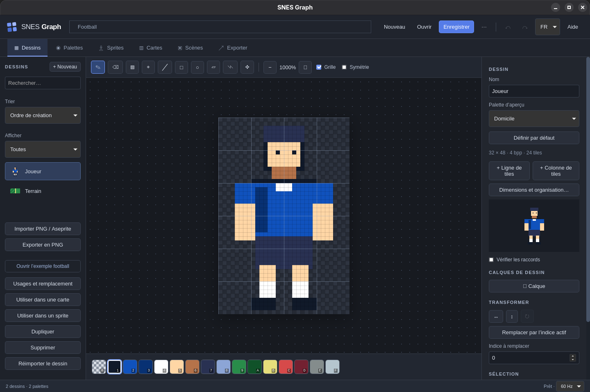
| Zone | Ce qu’elle permet | À savoir |
|---|---|---|
| Barre supérieure | Nouveau, Ouvrir, Enregistrer, Enregistrer sous, Annuler, Rétablir, langue et aide. | Un point après le nom signale des modifications non enregistrées. |
| Onglets d’ateliers | Dessins, Palettes, Sprites, Cartes, Scènes, Exporter. | Changer d’atelier ne crée pas de nouveau projet et ne l’enregistre pas. Certains réglages de vue sont réinitialisés en quittant l’atelier. |
| Bibliothèque à gauche | Rechercher, sélectionner et créer les ressources du type courant. | La recherche filtre la liste, pas tout le projet. Le bouton + crée une ressource dans l’atelier actif. |
| Actions sous la bibliothèque | Exemple football, usages, duplication, suppression ; import et export PNG dans Dessins. | Les commandes portent sur la ressource sélectionnée. Exporter utilise une sélection par cases au centre au lieu de cette bibliothèque. |
| Barre d’outils centrale | Outils de dessin, zoom, lecture et options d’aperçu selon l’atelier. | Une icône seule peut être identifiée en laissant le pointeur dessus. |
| Espace de travail | Éditer les pixels, manipuler les pièces, peindre la carte ou observer la scène. | Le damier représente la transparence. Les grilles et le zoom sont des aides de travail. |
| Inspecteur à droite | Modifier les propriétés de la sélection. | Faites défiler ce panneau indépendamment du centre. Des commandes importantes sont plus bas. Les triangles ouvrent ou ferment des groupes. |
| Barre d’état | Message de résultat ou d’erreur, état d’enregistrement et choix 50/60 Hz. | Le × à côté d’un message le masque ; il ne corrige pas sa cause. |
Toutes les commandes globales
| Commande | Effet |
|---|---|
|
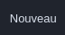 Nouveau |
Crée un projet vide avec un dessin et une palette ; revient dans Dessins. |
|
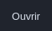 Ouvrir |
Charge un fichier .snesgraph. Pour un PNG ou
Aseprite, utilisez l’import dans Dessins.
|
|
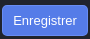 Enregistrer |
Sauvegarde toutes les ressources et tous les réglages du projet. |
|
|
Choisit une nouvelle destination ; pratique pour travailler sur une copie. |
|
|
Annule ou rétablit une modification. Les boutons sont grisés si aucun état n’est disponible. |
|
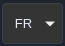 FR / EN |
Change les libellés de l’interface. Les noms que vous donnez aux ressources ne sont pas traduits. |
|
|
Ouvre l’aide courte et le champ Nom du projet. C’est ici que vous renommez le projet. |
|
|
Ouvre le choix de conversion des durées ; voir Fréquence et temps. |
Les champs numériques sont appliqués dès leur modification. Utilisez les petites flèches du champ ou saisissez la valeur. Les valeurs sont bornées à la plage acceptée. Pour abandonner une modification déjà appliquée, utilisez Annuler, pas simplement un changement d’onglet.
03 · Comprendre les ressources
Un pixel ne contient pas directement une couleur : il contient un indice. C’est la palette choisie qui donne sa couleur à cet indice.
| Ressource | Contient | Exemple football |
|---|---|---|
| Dessin / tileset | Une surface de pixels indexés, éventuellement divisée en calques artistiques. Les tiles sont ses blocs de 8 × 8 pixels. | Joueur : 32 × 48 pixels, soit 24 tiles. Terrain : 16 × 8 pixels, soit 2 tiles. |
| Palette | 4, 16 ou 256 entrées avec couleurs, noms, verrous et éventuellement cycle. | Domicile et Extérieur, chacune avec 16 entrées. |
| Personnage / métasprite | Des pièces tirées des dessins, plusieurs poses, des animations et des variantes. | Joueur, assemblé avec six pièces 16 × 16. |
| Carte / tilemap | Une grille référençant les tiles d’un dessin, avec palette et attributs par cellule. | Terrain : 32 × 32 cellules ; une ligne au milieu. |
| Scène | Des couches de cartes, des instances de personnages et des réglages vidéo. | Match : un terrain et deux instances du même Joueur. |
| Ensemble d’export | Une sélection de ressources, une scène de référence et des options d’optimisation. | Un export du match avec les deux palettes. |
Indices, couleurs et transparence
Dans un dessin 4 bpp, un pixel prend une valeur de 0 à 15. Si le maillot utilise l’indice 2, l’entrée 2 de Domicile peut être bleue et celle d’Extérieur blanche : les pixels restent identiques. Il faut donc conserver le même rôle pour les mêmes indices entre les palettes d’une famille.
Une palette de sprite SNES comporte 16 entrées : l’indice 0 transparent et 15 couleurs visibles. Un projet peut contenir de nombreuses palettes nommées ; cela ne signifie pas que toutes pourront être affichées simultanément dans la mémoire couleur de la console. Les contraintes se vérifient au niveau de la scène.
| Profondeur | Indices possibles | Entrées de palette | Octets par tile 8 × 8 | Utilisation dans l’éditeur |
|---|---|---|---|---|
| 2 bpp | 0–3 | 4 | 16 | Décors compatibles avec le mode choisi. |
| 4 bpp | 0–15 | 16 | 32 | Pièces de personnages et nombreux décors. |
| 8 bpp | 0–255 | 256 | 64 | Décors des modes compatibles ; Mode 7 exporté dans une organisation particulière. |
04 · Projets et sauvegardes
Enregistrer un projet autonome
Un fichier .snesgraph rassemble les pixels, palettes,
calques, personnages, cartes, scènes et ensembles d’export. Les images
sources importées ne sont pas nécessaires pour rouvrir le projet.
Gardez-les néanmoins pour continuer leur création dans un autre
logiciel et les réimporter.
- Ouvrez ? et remplissez Nom du projet.
- Cliquez sur Enregistrer. Au premier enregistrement natif, choisissez le dossier et le nom du fichier.
- Vérifiez le message Projet enregistré et l’absence de point après le nom.
- Pour une variante de travail ou une étape importante, utilisez ⋯ et un nouveau fichier.
Renommer le projet ne renomme pas un fichier déjà ouvert. Utilisez Enregistrer sous pour changer aussi le nom de fichier. Dans le navigateur, chaque sauvegarde est un téléchargement : vérifiez son emplacement dans les téléchargements. Ctrl + Shift + S déclenche Enregistrer sous. Une sauvegarde déjà en cours doit se terminer avant d’en lancer une autre. Si vous modifiez ou annulez pendant l’écriture, le point reste affiché lorsque l’état courant diffère de celui enregistré.
Annulation, rétablissement et fermeture
Ctrl + Z annule ; Ctrl + Shift + Z ou Ctrl + Y rétablit. Un trait de dessin ou un déplacement validé correspond à une modification. Une nouvelle modification après une annulation efface la branche de rétablissement.
L’historique conserve jusqu’à 50 modifications, avec une limite mémoire estimée qui peut réduire ce nombre pour de gros projets. Il est réinitialisé à l’ouverture ou au remplacement du projet ; il n’est pas enregistré dans le fichier.
| Choix | Résultat |
|---|---|
| Annuler ou × | Reste dans le projet courant. |
| Enregistrer | Enregistre puis poursuit l’ouverture ou la fermeture si l’enregistrement aboutit. |
| Abandonner | Remplace ou ferme sans enregistrer les modifications courantes. |
Récupération automatique
Après une modification, une copie de récupération est programmée après environ 1,5 seconde sans nouvelle modification. Au démarrage, un bandeau peut proposer Récupérer ou Ignorer. Récupérer charge la copie comme projet à enregistrer ; choisissez ensuite une destination. Même si vous modifiez puis annulez pour revenir à la copie récupérée, elle reste à enregistrer.
La récupération n’est ni une sauvegarde datée ni un historique de tous vos projets. Elle stocke le dernier état récupérable. Ignorer masque le bandeau ; cela ne signifie pas que la copie est supprimée. Enregistrez vos fichiers de travail régulièrement.
50 Hz, 60 Hz et durée des animations
Les durées de poses, cycles et tiles animées se règlent en
images console. Le temps en secondes vaut
nombre d’images ÷ fréquence. Les vitesses de déplacement
des couches et personnages sont déjà exprimées par seconde.
| Choix de la boîte de dialogue | Nouvelle durée | Temps écoulé |
|---|---|---|
| Conserver les images console | 12 images | 0,24 s au lieu de 0,20 s : animation plus lente. |
| Convertir les durées | 10 images | 0,20 s conservée ; les autres valeurs sont arrondies à l’image la plus proche, minimum 1. |
Le changement est global au projet et annulable. La durée de la ROM saisie dans Exporter est un réglage de génération séparé : vérifiez-la après un changement de fréquence.
05 · Créer et gérer les ressources
Sélectionnez l’atelier, cliquez sur le + à côté du titre de la bibliothèque, remplissez la fenêtre puis cliquez sur Créer. Les noms peuvent contenir des espaces et des accents ; les liens entre ressources ne reposent pas sur leurs noms.
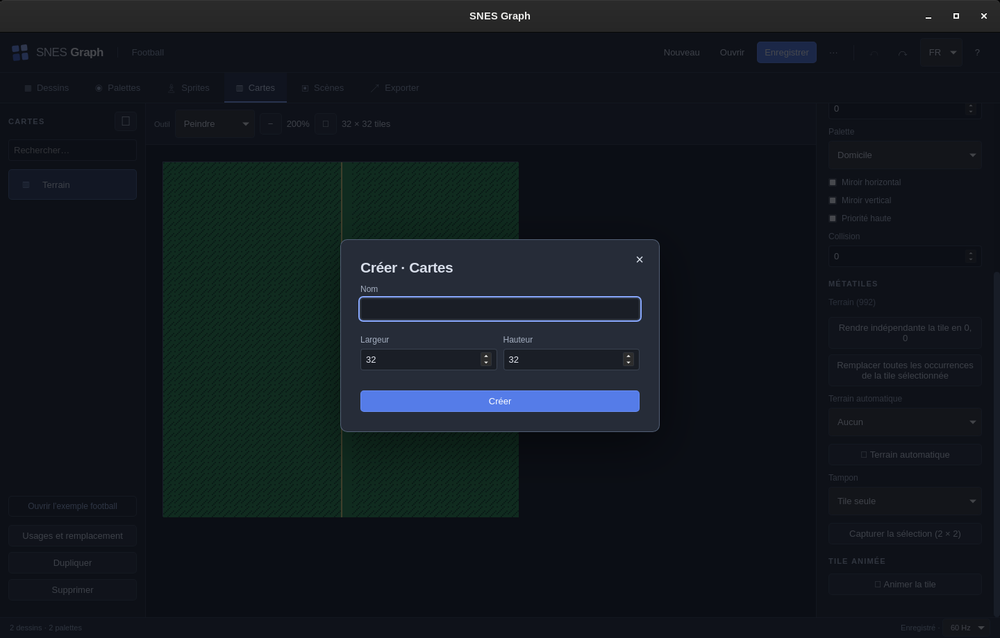
| Atelier | Champs | Résultat et valeurs à connaître |
|---|---|---|
| Dessins | Nom, largeur, hauteur, profondeur 2/4/8 bpp. | Dimensions de création 8 à 512 pixels par axe, arrondies au multiple supérieur de 8. Une palette de taille exacte est réutilisée ou créée. |
| Palettes | Nom, nombre d’entrées 4/16/256. | Pour un personnage, choisissez 16. La taille d’une palette existante n’a pas de commande de conversion. |
| Sprites | Nom. | Nouveau personnage avec pose et animation initiales. Ajoutez des pièces à partir d’un dessin 4 bpp. |
| Cartes | Nom, largeur, hauteur. | 1 à 128 cellules par axe à la création. Le premier dessin sert de tileset initial ; changez-le dans l’inspecteur. |
| Scènes | Nom. | Une scène sans couches ni personnages, initialement en Mode 1 et 224 lignes. Ajoutez son contenu dans l’inspecteur. |
| Repère dans l’interface | Quand et comment l’utiliser |
|---|---|
|
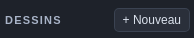 + Nouveau |
Crée une ressource dans l’atelier courant. Dans Dessins, indiquez son nom, ses dimensions en pixels et sa profondeur. Pour ajouter des tiles à un dessin existant, utilisez plutôt les boutons de son inspecteur. |
|
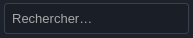 Rechercher… |
Filtre la liste des ressources de l’atelier par leur nom. Effacez la recherche si une ressource semble manquer ; le filtre ne la supprime pas. |
|
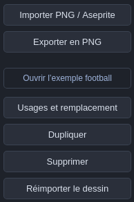 Actions sur le dessin sélectionné |
Importer PNG / Aseprite ajoute des ressources à partir d’un fichier ; Exporter en PNG produit une image du dessin sélectionné. Réimporter le dessin remplace ses pixels depuis un PNG compatible. Usages et remplacement recherche les liens, Dupliquer crée une copie et Supprimer retire une ressource non utilisée. Ouvrir l’exemple football remplace le projet courant après traitement des modifications non enregistrées. |
| Repère dans l’interface | Utilisation |
|---|---|
| Nom |
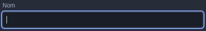 Identifie le nouveau dessin dans la bibliothèque. Utilisez un nom comme « Ballon » pour le distinguer du joueur et du terrain. |
| Largeur / Hauteur |
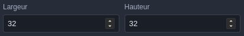 Dimensions en pixels, de 8 à 512 à la création, multiples de 8. Un dessin de 32 × 32 contient 4 × 4 tiles, soit 16 tiles. Dans le dialogue de création d’une carte, les dimensions sont en cellules, pas en pixels. |
| Profondeur |
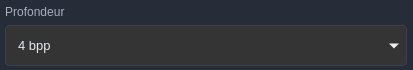 2 bpp : 4 indices ; 4 bpp : 16 indices ; 8 bpp : 256 indices. Pour les pièces de personnages de cet éditeur, choisissez 4 bpp. La profondeur détermine combien d’indices les pixels peuvent utiliser. |
| Créer |
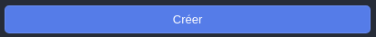 Ajoute un dessin vide et le sélectionne. Fermer avec × quitte le dialogue sans créer de ressource. Vous pourrez ensuite agrandir ce dessin avec + Ligne de tiles et + Colonne de tiles. |
Parcours directs et gestion des ressources
Utilisez Trier pour choisir l’ordre de création ou le nom, et Afficher pour filtrer les ressources utilisées ou non utilisées. La recherche filtre toujours les noms. Les boutons des Usages et remplacement ouvrent les ressources concernées. Une duplication conserve les références externes partagées.
Dans une carte, Créer une tile ajoute une ligne au dessin source et ouvre sa première nouvelle tile. Dessinez votre motif, puis choisissez Revenir à la carte : la nouvelle tile devient le pinceau ; sélection, zoom et défilement de la carte sont conservés. Aucune cellule n’est peinte automatiquement. Modifier le dessin source ouvre la tile du pinceau, ou celle de la cellule sélectionnée avec l’outil Sélectionner. Modifier cette source partagée affecte tous ses usages.
Depuis un dessin, Utiliser dans une carte ouvre une carte compatible ou en crée une. Utiliser dans un sprite (4 bpp uniquement) permet de choisir un acteur et une pose ; une pièce de 8 × 8 issue du coin supérieur gauche est ajoutée. Sa taille et sa source restent modifiables dans l’inspecteur du sprite.
Le tampon sélectionné peut être renommé, dupliqué ou supprimé sans effacer les cellules peintes. Dépliez les règles de raccord d’un terrain pour le renommer ou le dupliquer. Avant sa suppression, choisissez un autre terrain ou conservez les tiles sans leur association au terrain. Le remplacement recalcule les raccords. Les animations de tiles ont un nom facultatif ; leur suppression conserve la tile de base. Pour dupliquer une animation, choisissez d’abord une tile de base non animée dans le pinceau.
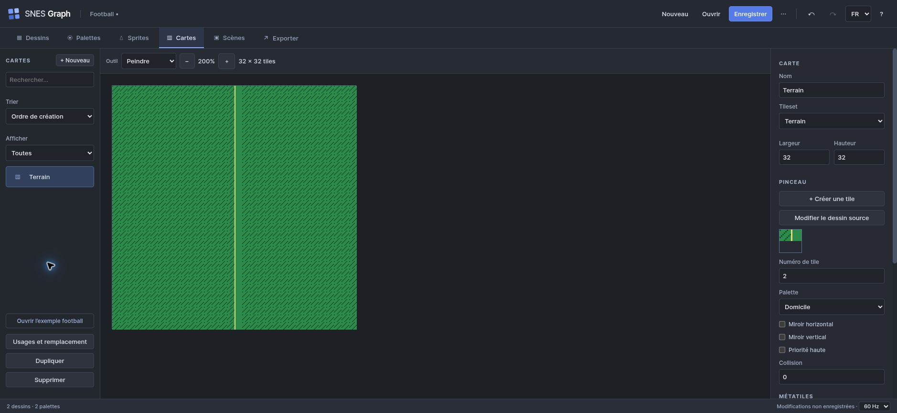
Dupliquer sans perdre de vue les liens
Dupliquer copie la ressource sélectionnée, mais conserve les références vers les autres ressources. Un personnage dupliqué continue donc à utiliser les mêmes dessins et palettes. Une carte dupliquée continue à utiliser le même tileset. Pour obtenir des pixels réellement indépendants, dupliquez aussi le dessin et réaffectez la copie.
Une palette dupliquée possède en revanche ses propres couleurs. Pour une nouvelle tenue, dupliquez la palette et créez une variante du personnage : il est inutile de dupliquer les pixels.
Usages, remplacement et suppression
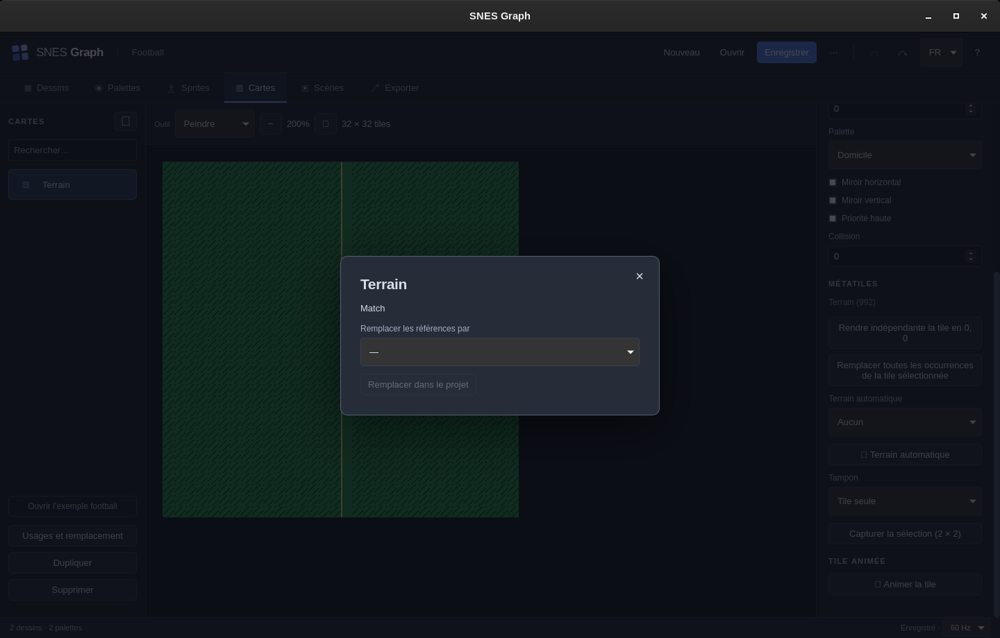
- Sélectionnez la ressource puis Usages et remplacement.
- Lisez les noms des ressources qui en dépendent.
- Si nécessaire, choisissez une ressource du même type dans Remplacer les références par.
- Cliquez sur Remplacer dans le projet. Les références compatibles sont mises à jour ; l’ancienne ressource reste présente.
- Supprimez ensuite l’ancienne ressource si elle n’est plus utilisée.
Une suppression utilisée ailleurs est refusée. Le projet conserve au moins un dessin et une palette. Un remplacement incompatible peut être refusé après contrôle du projet. Remplacer un personnage dans les scènes réinitialise les instances sur la première animation du nouveau personnage et sur sa variante Original : revérifiez leur apparence.
Portée globale. Remplacer les références agit dans tout le projet. Pour un changement limité à une pièce ou une cellule, modifiez sa propriété locale dans Sprites ou Cartes. Une suppression non bloquée s’applique immédiatement ; l’annulation permet de la récupérer tant que l’historique existe.
06 · Dessiner et transformer
L’atelier Dessins modifie les pixels partagés par les pièces de personnages et les cartes. Commencez par choisir le dessin, puis l’indice de couleur sous le canevas.
Les dix outils, de gauche à droite
Chaque vignette ci-dessous est une capture du bouton réel. Cliquez dessus pour l’agrandir, puis fermez avec Échap. Dans l’application, le survol affiche le nom de l’outil. Un fond bleu indique l’outil actif ; un bouton grisé peut être indisponible dans le contexte courant.
| Outil | Geste | Résultat |
|---|---|---|
|
|
Cliquez ou tracez en maintenant le bouton gauche. |
Pose l’indice actif et relie les positions du trait.
Exemple : ajoutez un pixel clair au maillot avec l’indice 4. Le pixel garde cet indice dans toutes les variantes. |
|
|
Cliquez ou tracez. |
Écrit l’indice 0 transparent dans le dessin ou le calque
actif.
Sur un calque supérieur, effacer laisse apparaître les calques visibles du dessous ; cela ne peint pas du noir. |
|
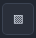 Remplir |
Cliquez dans une zone. |
Remplace la zone contiguë de même indice par l’indice actif ;
une sélection limite le résultat.
Pour recolorer uniquement une zone, fermez son contour. Le remplissage suit les pixels de même indice reliés entre eux, pas toutes les couleurs visuellement proches. |
|
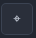 Pipette |
Cliquez un pixel. |
Prélève son indice dans le rendu aplati du dessin, sans
changer les couleurs de palette.
Cliquez sur l’herbe pour retrouver son indice, puis revenez au Crayon : la pipette sélectionne la couleur, elle ne dessine pas. |
|
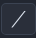 Ligne |
Glissez du début à la fin, puis relâchez. |
Trace une ligne d’un pixel d’épaisseur.
Utile pour une ligne blanche de terrain. Choisissez l’indice de ligne avant de glisser. |
|
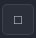 Rectangle |
Glissez entre deux coins. |
Trace le contour. Remplissez ensuite l’intérieur si souhaité.
Pour un rectangle plein, dessinez le contour puis utilisez Remplir à l’intérieur. |
|
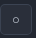 Ellipse |
Glissez pour définir sa boîte. |
Trace un contour d’ellipse.
La largeur et la hauteur du glissement déterminent la forme : même largeur et hauteur pour un cercle. |
|
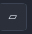 Sélection |
Glissez entre deux coins. |
Définit un rectangle de travail ; remplace la sélection
précédente.
Sélectionnez un carré de 8 × 8 pixels pour travailler sur une tile. Sans Désélectionner, les outils de dessin restent limités à la sélection. |
|
|
Dessinez un contour fermé en maintenant le bouton. |
Définit un masque de sélection libre et sa boîte englobante.
Utile pour copier la silhouette irrégulière d’un détail. Les transformations par miroir ou rotation utilisent toutefois le rectangle englobant. |
|
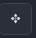 Déplacer |
Après une sélection, glissez dans le canevas. |
Déplace les pixels sélectionnés, remplace leur emplacement
initial par la transparence et désélectionne à la fin.
Faites d’abord une sélection ; choisissez ensuite Déplacer et glissez. Une copie destinée à rester aussi à l’origine se fait avec Copier / Coller. |
Les pixels déplacés hors du dessin sont perdus dans le résultat ; utilisez Annuler pour revenir en arrière. Le tracé n’est validé qu’au relâchement du pointeur. Il n’y a pas de raccourcis B/E/G documentés pour sélectionner les outils : utilisez la barre.
Zoom, grille, symétrie et aperçu
| Commande | Fonctionnement |
|---|---|
|
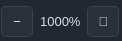 − / + et pourcentage |
Zoom par multiples entiers, minimum 100 %, jusqu’à 3200 %
selon la taille du dessin ; une limite de canevas peut réduire
le maximum. Ne change pas les dimensions du fichier.
1000 % signifie qu’un pixel du dessin est affiché sur 10 × 10 pixels écran. Cela n’ajoute aucune tile. |
|
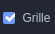 Grille |
Montre les pixels et marque plus fortement les limites des
tiles 8 × 8. N’est pas exportée.
Les séparations renforcées tous les 8 pixels permettent de repérer les limites des tiles. |
|
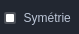 Symétrie |
Duplique les marques du crayon, de la gomme et des formes de
part et d’autre de l’axe vertical du dessin. Ce n’est pas une
rotation, ni une symétrie générale du remplissage.
Le crayon et les formes reportent les marques autour de l’axe vertical du dessin entier. Pratique pour un visage ; ne s’applique pas à toutes les opérations comme le remplissage. |
|
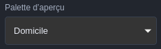 Palette d’aperçu |
Recolore l’affichage avec une palette contenant assez
d’entrées. Ne remplace pas les palettes des pièces et cellules
existantes.
Choisir Extérieur permet d’essayer une tenue. Pour appliquer cette tenue à un joueur dans la scène, utilisez sa Variante. |
|
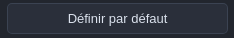 Définir par défaut |
Enregistre cette palette comme palette du dessin. Les
références de palette déjà portées par des pièces et cartes
restent distinctes.
À utiliser quand cette palette doit devenir celle du dessin. Ce n’est pas une commande de remplacement global des palettes. |
|
|
Montre le dessin, sa largeur, sa hauteur, sa profondeur et le
nombre de tiles.
16 × 8 correspond à deux tiles ; 4 bpp permet les indices 0 à 15. Le petit aperçu sous les boutons montre le rendu sans la grille d’édition. |
|
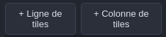 + Ligne de tiles / + Colonne de tiles |
Ajoute 8 pixels en bas ou à droite du dessin, jusqu’à 4096
pixels par dimension. Les nouvelles tiles sont transparentes.
Les pixels et tous les calques sont conservés, ainsi que les
motifs utilisés dans les cartes, métatiles, terrains,
animations et sprites. Une colonne peut changer les numéros
des tiles : les références du projet sont adaptées
automatiquement. Annuler permet de revenir à la taille
précédente.
Sur Terrain, + Ligne ajoute deux nouvelles tiles transparentes. + Colonne ajoute une tile par rangée existante. Dessinez ensuite dans ces cases vides. |
|
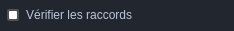 Vérifier les raccords |
Répète le dessin en grille 3 × 3 dans l’inspecteur pour
repérer une rupture sur les bords.
La répétition porte sur le dessin entier. Pour le Terrain de 16 × 8, c’est le bloc des deux tiles qui est répété, pas uniquement la tile sélectionnée. |
|
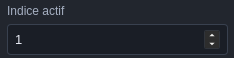 Indice actif |
Choisit numériquement la même couleur que la bande de palette.
L’affichage de la bande est hexadécimal : A à F correspondent
à 10 à 15.
C’est la couleur de destination du crayon et du remplacement. Sur Terrain, 9 désigne l’herbe ; le nom et la couleur viennent de la palette d’aperçu. |
| Repère dans l’interface | Quand et comment l’utiliser |
|---|---|
 Nom du dessin Nom du dessin
|
Renomme la ressource sélectionnée. « Terrain » est un nom de dessin, distinct du nom de la carte qui le réutilise. Changer ce nom ne change ni la taille ni les pixels. |
| Bande des indices |
Cliquez une case pour choisir l’indice actif. Son contour indique la sélection ; 0 efface vers la transparence. Les lettres A à F représentent les indices 10 à 15. La bande affiche les couleurs de la palette d’aperçu choisie. Pour tracer une ligne sur le terrain de football, choisissez B (indice 11, Ligne), puis l’outil Ligne. Modifier la valeur RGB de cette entrée se fait dans l’atelier Palettes. |
Dimensions et organisation des tiles
Ouvrez Dimensions et organisation… dans l’inspecteur du dessin. Redimensionner utilise des dimensions en tiles et l’un des neuf ancrages. Les dimensions en pixels et l’aperçu sont affichés avant application. Les boutons + Ligne et + Colonne restent disponibles pour agrandir à droite ou en bas.
Pour recadrer, sélectionnez une zone avant d’ouvrir le dialogue ; ses bords sont étendus aux limites de tiles. Insérer/retirer une ligne ou colonne utilise un numéro à partir de zéro. Pour déplacer un bloc, sélectionnez-le et choisissez Déplacer / échanger : les tiles de destination sont échangées, sans écrasement. Les blocs doivent être disjoints.
Les cartes, tampons, terrains, animations et sources de pièces sont remappés ; tous les calques sont conservés. Si une pièce de sprite serait fragmentée, corrigez sa source dans l’assemblage avant de recommencer. Pour une tile supprimée encore utilisée, renseignez un numéro de remplacement dans le nouveau dessin. Ce remplacement redirige les références, pas les pixels supprimés.
Une réduction exige de cocher l’acceptation de la suppression. Appliquer reste désactivé tant qu’un conflit subsiste. Annuler ferme le dialogue sans modification ; Ctrl+Z annule toute la transformation validée en une étape.
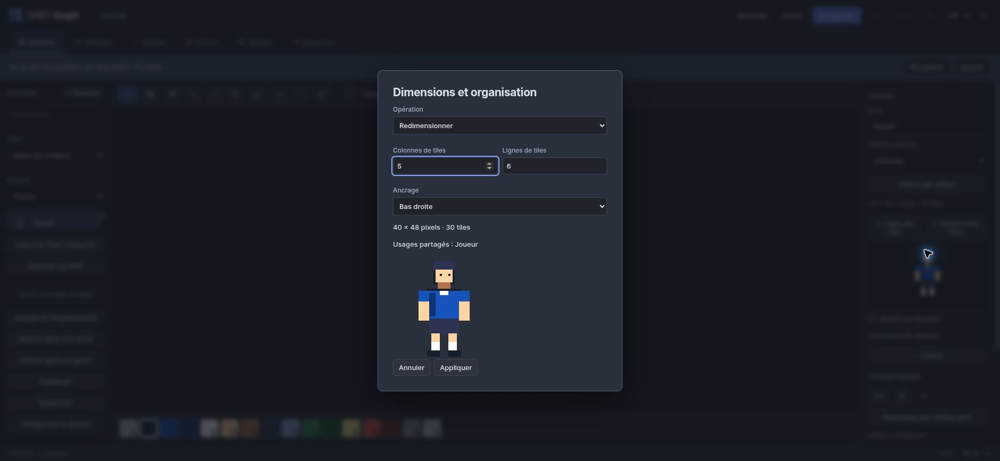
Calques de dessin
| Repère dans l’interface | Quand et comment l’utiliser |
|---|---|
|
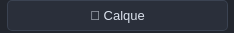 + Calque |
Sur un dessin sans calques, ce bouton crée Base à partir des pixels existants, puis un nouveau calque transparent. Dessinez les marques du terrain sur ce nouveau calque pour pouvoir les masquer séparément. |
|
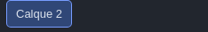 Calque actif |
Cliquez son bouton de nom. Le fond bleu indique où les prochains traits seront écrits. Ce choix est indépendant des cases Visible et Verrouiller. |
+ Calque ajoute un calque transparent au-dessus. Lors du premier ajout, les pixels existants deviennent un calque Base. Cliquez sur un nom de calque pour le rendre actif.
| Contrôle | Utilisation |
|---|---|
|
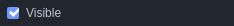 Visible |
Inclut ou exclut le calque du rendu aplati, donc aussi des
aperçus et exports qui utilisent ce dessin.
Exemple : masquer temporairement les marquages pour observer uniquement l’herbe. |
|
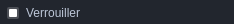 Verrouiller |
Protège les pixels du calque des opérations de dessin. Un
calque invisible peut encore être actif : vérifiez les deux
cases si un trait n’apparaît pas.
Verrouillez Base avant de travailler sur un calque de détails ; sélectionnez bien ce dernier avant de dessiner. |
|
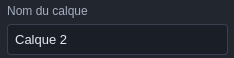 Nom du calque |
Renomme le calque actif.
Un nom comme « Marquages » aide à identifier le calque qui porte les lignes du terrain. |
|
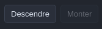 Descendre / Monter |
Change l’ordre de superposition. L’ordre va du fond vers
l’avant ; l’indice 0 laisse voir le dessous.
Monter est grisé si le calque est déjà au-dessus de tous les autres. |
|
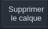 Supprimer le calque |
Retire le calque actif, sauf s’il est verrouillé ou le dernier
restant.
La suppression concerne le calque actif et ses pixels ; Annuler permet de le retrouver. |
|
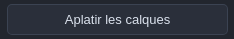 Aplatir les calques |
Conserve uniquement l’image composée des calques visibles et
supprime la structure de calques. Nécessaire avant réimport
PNG.
Les calques masqués ne sont pas conservés dans le résultat. Enregistrez une copie du projet si vous voulez garder leur organisation pour une autre version. |
Ces calques sont des outils artistiques. Ils ne deviennent pas automatiquement BG1/BG2 ni plusieurs sprites matériels. L’export utilise leur image aplatie.
Transformations et sélection
| Repère dans l’interface | Quand et comment l’utiliser |
|---|---|
|
|
Échange la gauche et la droite de la sélection rectangulaire, ou du dessin entier sans sélection. Utile pour réorienter un détail. Ici, les pixels sont modifiés ; le miroir d’une pièce dans Sprites conserve son dessin source. |
|
|
Échange le haut et le bas sur la même portée. Sélectionnez d’abord la tile si vous ne souhaitez pas retourner toute la feuille. |
|
|
Tourne une zone carrée. La capture montre le bouton grisé sur Terrain 16 × 8 sans sélection : sélectionnez une tile 8 × 8 pour pouvoir la tourner. |
|
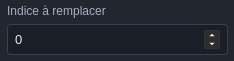 Indice à remplacer |
Choisissez l’indice source à rechercher. Exemple : 9 pour l’herbe de football. Cette valeur est indépendante de l’indice actif, qui sera la destination. |
|
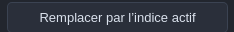 Remplacer par l’indice actif |
Après avoir choisi l’indice source et la couleur de destination, cliquez une fois. Exemple : source 9 et indice actif 10 remplacent partout l’herbe claire par l’herbe sombre dans le calque actif ou dessin. La sélection ne limite pas cette commande. Les couleurs de palette ne sont pas modifiées ; Annuler revient sur le remplacement. |
|
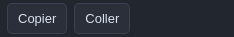 Copier / Coller |
Sélectionnez le détail et cliquez Copier. Définissez ensuite son point d’arrivée avec une sélection puis cliquez Coller. Sans sélection d’arrivée, le collage commence en haut à gauche. Les pixels hors du dessin sont coupés. |
|
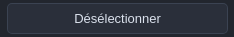 Désélectionner |
Retire les limites de sélection et le masque du lasso. Utilisez-le si le crayon semble ne plus agir en dehors d’un ancien rectangle. |
Les boutons ↔, ↕ et ↻ appliquent respectivement un miroir horizontal, un miroir vertical et un quart de tour. Ils agissent sur le rectangle sélectionné, ou sur tout le dessin/calque actif sans sélection. La rotation est disponible seulement sur une zone carrée.
Avec un lasso, les transformations utilisent sa boîte rectangulaire englobante. Le masque libre sert notamment au dessin, au déplacement et à la copie ; ne supposez pas qu’une rotation ou un remplacement d’indice respecte ce masque.
Copier mémorise les indices de la sélection, ou de tout le calque actif sans sélection. Coller les pose au coin supérieur gauche de la sélection actuelle, ou à l’origine (0,0). Ce tampon est interne à cet atelier ; il ne copie pas une image vers un logiciel externe et n’est pas conservé lorsque vous quittez ce dessin. Utilisez l’export PNG pour cela.
Désélectionner libère le rectangle et le masque. Sous Sélection, les usages indiqués concernent la tile située au coin supérieur gauche de la sélection, pas nécessairement toutes les tiles couvertes.
Indice à remplacer désigne la valeur source ; choisissez ensuite la couleur de destination dans la bande puis cliquez sur Remplacer par l’indice actif. L’opération porte sur tout le calque actif ou dessin, indépendamment de la sélection. Elle change les indices, pas les couleurs de la palette.
Exercice : une retouche partagée. Dans Joueur, choisissez l’indice 4 et ajoutez un détail au maillot. Ouvrez Sprites puis Comparer : le détail apparaît dans toutes les variantes avec leur propre couleur à l’indice 4. Annulez le trait pour retrouver l’exemple.
07 · Palettes nommées
Une palette est une ressource que vous pouvez nommer, réutiliser, dupliquer et animer. Son nom sert à la retrouver ; le rôle de chaque indice assure la cohérence des variantes.
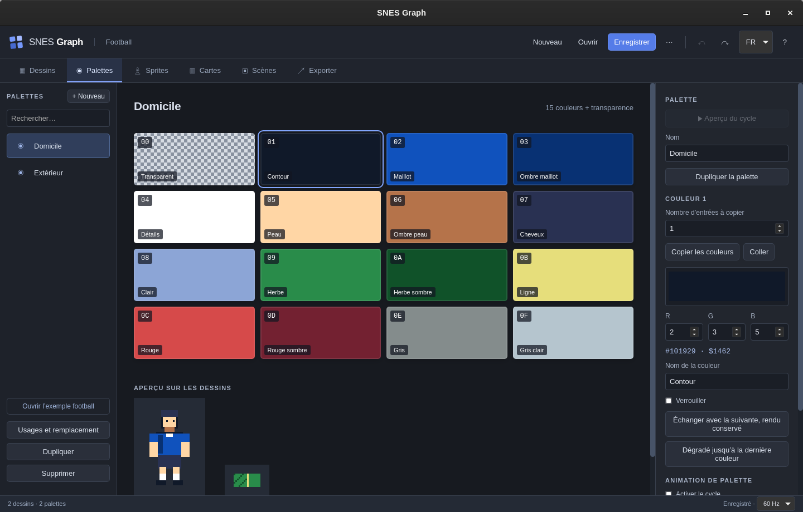
Nommer et modifier les couleurs
| Repère dans l’interface | Quand et comment l’utiliser |
|---|---|
|
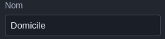 Nom de la palette |
Donnez un nom d’usage : Domicile, Extérieur, Gardien. Ce nom identifie la palette complète dans les listes de dessins, pièces, cartes et variantes ; il ne remplace pas le rôle de chaque entrée. |
|
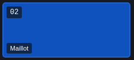 Une entrée de palette |
Le numéro en haut à gauche est l’indice hexadécimal ; le nom en bas est son rôle. Dans la capture, 02 est l’indice 2, Maillot. Cliquez l’entrée pour que l’inspecteur affiche Couleur 2. Les pixels ne mémorisent que ce numéro. Modifier sa couleur recolore tous les pixels qui l’utilisent avec cette palette. |
|
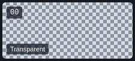 Entrée 00 |
La première entrée représente la transparence du dessin. Le damier sert à la repérer et ne fait pas partie des pixels exportés. Une palette 4 bpp présente donc 15 couleurs visibles et cette entrée transparente. |
 Sélecteur de couleur Sélecteur de couleur
|
Cliquez le grand rectangle coloré pour ouvrir le sélecteur. La couleur choisie est rapprochée d’une couleur SNES. Si l’entrée est verrouillée, sa couleur ne peut pas être changée. |
 R, G, B R, G, B
|
Ces champs utilisent chacun 0 à 31, pas 0 à 255 : R = rouge, G = vert, B = bleu. Pour un rouge saturé, utilisez 31, 0, 0. La capture montre la couleur de contour, 2, 3, 5. |
|
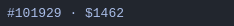 Codes couleur affichés |
Le premier code est la représentation écran, le second le mot RGB555 SNES. Ces deux valeurs sont des indications calculées ; elles ne sont pas des champs de saisie. |
|
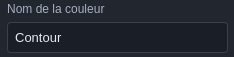 Nom de la couleur |
Décrit le rôle d’un indice, par exemple Contour ou Maillot. Conservez les mêmes rôles aux mêmes indices dans Domicile et Extérieur pour que la variante fonctionne sans redessiner le joueur. |
|
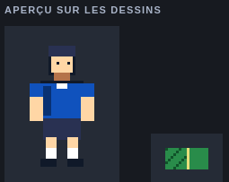 Aperçu sur les dessins |
Montre chaque dessin compatible avec la palette sélectionnée. Voir le joueur recoloré ici ne signifie pas que les pièces ou les instances utilisent désormais cette palette. Pour changer une tenue dans Match, choisissez une variante du joueur. |
- Choisissez la palette à gauche et modifiez son Nom dans l’inspecteur.
- Cliquez sur une entrée dans la grille.
- Utilisez le sélecteur de couleur ou les champs R, G, B pour définir une couleur compatible SNES.
- Donnez un Nom de la couleur utile : Maillot, Ombre maillot, Peau…
- Observez Aperçu sur les dessins. Il applique la palette sélectionnée aux dessins de profondeur compatible, même s’ils utilisent habituellement une autre palette.
Le code #RRGGBB affiche une représentation écran et la
valeur $xxxx le mot couleur SNES. Ce sont des indications
; l’interface ne propose pas de champ hexadécimal à saisir. La couleur
écran choisie est arrondie aux composantes 5 bits. L’entrée 0 reste
transparente dans les dessins : sa sélection affiche une explication
plutôt que les outils d’édition de couleur.
Réordonner n’est pas recolorer. L’échange avec conservation du rendu propage la permutation à la famille de palettes reliées par les variantes et aux dessins concernés. Il est refusé si une entrée liée est verrouillée ou si le dessin est partagé avec une autre famille de palettes incompatible, y compris sa palette par défaut et celles des tampons. Un échange qui dépasserait les indices autorisés par la profondeur du dessin est également refusé. Dupliquez et réaffectez le dessin pour isoler ce travail. Après un réordonnancement, revérifiez vos plages de cycle : leurs bornes restent des indices.
Comparer les palettes et remapper les pixels
Dépliez Comparer et remapper dans Palettes. Choisissez une seconde palette de même taille et une ressource d’aperçu. Les deux rendus partagent le même temps de lecture ; pour un sprite, choisissez aussi son animation. Le tableau surligne les couleurs différentes. Sur un sprite, la comparaison substitue uniquement la palette sélectionnée, en conservant les autres palettes de ses pièces.
Pour un dessin, Remapper les indices… ouvre les correspondances source → destination. Zéro reste transparent et les indices visibles restent non nuls. L’aperçu montre le résultat avant Appliquer aux pixels partagés. Tous les calques et usages de ce dessin sont affectés ; les couleurs de palette restent inchangées. Un indice verrouillé dans une palette utilisée bloque sa modification. Annuler abandonne les correspondances ; Ctrl+Z annule l’application.
Dans Cartes, sélectionnez une région puis utilisez Appliquer la palette à la sélection. Dans Sprites, Maj+clic sélectionne plusieurs pièces et le champ Palette des pièces sélectionnées les modifie ensemble. Une variante peut être dupliquée sans copier les dessins. Dans Scènes, cochez plusieurs instances puis choisissez Variante de la sélection ; elles doivent utiliser le même acteur.
Cycles de palette
Cochez Activer le cycle, puis choisissez Premier indice, Dernier indice et Durée en images. Cette durée est le temps entre deux décalages de couleur. L’indice 0 est exclu.
Aperçu du cycle lance ou arrête la rotation sur les aperçus. Une plage 9–11 contient trois couleurs : à 8 images par étape, un tour complet dure 24 images, soit 0,4 seconde à 60 Hz. Les pixels restent les mêmes ; ce sont leurs couleurs qui se déplacent. Les verrous d’édition ne retirent pas une entrée d’un cycle.
Les cycles sont visibles dans les aperçus animés des personnages et scènes et pris en compte pour le placement des palettes. Le simple aperçu d’un dessin reste une vue de travail statique. Une palette animée peut rendre impossible un partage de slots qui paraissait compatible à l’image initiale.
08 · Tenues et variantes
Pour deux équipes portant le même équipement avec des couleurs différentes, créez deux palettes et deux variantes d’un même personnage.
| Indice | Rôle | Domicile | Extérieur |
|---|---|---|---|
| 0 | Transparence | Transparent | Transparent |
| 2 | Maillot | Bleu | Blanc cassé |
| 3 | Ombre du maillot | Bleu sombre | Bleu gris clair |
| 4 | Détails et chaussettes | Blanc | Rouge |
| 5, 6, 7 | Peau, ombre de peau, cheveux | Mêmes rôles et mêmes couleurs dans les deux palettes. | |
Créer une nouvelle tenue, pas à pas
- Dans Palettes, sélectionnez Domicile et cliquez sur Dupliquer la palette.
- Nommez la copie Gardien, par exemple. Modifiez 2, 3 et 4 sans déplacer les autres indices.
- Dans Sprites, sélectionnez Joueur puis + Variante par palette.
- Dans l’inspecteur, renseignez Nom de la variante : Gardien.
- Pour chaque palette de base utilisée par les pièces, choisissez la palette de remplacement. Dans l’exemple, affectez Domicile → Gardien.
- Sélectionnez Gardien dans la liste Variante de la barre d’outils. Cochez Comparer pour contrôler toutes les tenues.
- Dans Scènes, ajoutez ou dupliquez une instance de Joueur et affectez-lui la variante Gardien.
Une variante peut remplacer plusieurs palettes de base si un personnage utilise des pièces aux palettes différentes. Une correspondance absente conserve la palette d’origine. Les palettes de remplacement proposées pour les sprites ont exactement 16 entrées.
| Votre intention | Opération | Ce qui est partagé |
|---|---|---|
| Essayer un rendu sans affecter le projet | Palette d’aperçu dans Dessins. | Pixels inchangés ; pas de nouvelle variante. |
| Définir une autre tenue réutilisable | Palette indépendante + variante du personnage. | Tous les dessins, poses et animations. |
| Afficher deux joueurs différents à l’écran | Deux instances de Joueur dans une scène, chacune avec sa variante. | Le personnage ; positions et vitesses indépendantes. |
| Modifier la silhouette d’un autre personnage | Dupliquer le personnage et les dessins nécessaires, puis réaffecter ses pièces. | Seulement les ressources que vous décidez de garder communes. |
Supprimer la variante est désactivé tant qu’une scène utilise cette variante. Réaffectez d’abord ses instances à Original ou à une autre variante. Choisir Original dans l’aperçu ne supprime rien.
09 · Assembler les sprites
Un personnage visible peut demander plusieurs sprites matériels, appelés OBJ. L’atelier Sprites assemble ces pièces pour former des poses réutilisables.
Ajouter et sélectionner une pièce
- Choisissez une pose dans la bande inférieure et arrêtez la lecture.
- Cliquez sur + Ajouter une pièce. Elle utilise initialement le premier dessin 4 bpp et une zone 8 × 8.
- Cliquez sur une pièce dans l’aperçu pour la sélectionner et afficher ses propriétés.
- Choisissez le dessin source, la taille et les coordonnées source.
- Positionnez la pièce avec X/Y ou par glissement.
Un double-clic sur une pièce ouvre son dessin. Le bouton Revenir au personnage dans la bibliothèque de Dessins ramène à l’assemblage. Une correction du dessin affecte toutes les pièces qui utilisent cette zone, dans toutes les poses concernées.
Découpage automatique d’un dessin
Choisissez Dessin à découper, puis Découpage. Les tailles proposées divisent exactement largeur et hauteur. Chaque option affiche le nombre de carrés non entièrement transparents et leur coût brut en pixels.
Appliquer le découpage à la pose remplace toutes les pièces de la pose active par un découpage régulier ; les carrés entièrement transparents sont ignorés. Il ne découpe pas tous les dessins ni toutes les poses et ne cherche pas un assemblage de tailles mixtes optimal.
Choisissez des tailles compatibles avec le couple global de tailles OBJ de la scène. Dans Match, le couple est 16 × 16 / 32 × 32. Une pièce 8 × 8 rendrait ce couple incompatible. Le nombre de personnages n’est pas le nombre d’OBJ : deux joueurs de six pièces demandent douze OBJ.
Collisions et attaches
Dépliez Collisions et attaches en bas de l’inspecteur, lecture arrêtée. Ces données sont propres à la pose.
L’éditeur ne lance pas une simulation de collisions, ne code pas de règles de jeu et ne dessine pas ici un éditeur graphique de boîtes. Les coordonnées sont saisies dans le repère de la pose ; le manifeste les conserve et votre moteur doit appliquer sa convention d’origine.
10 · Poses et animations
Une pose décrit un assemblage. Une animation choisit quelles poses afficher et combien d’images console chacune reste à l’écran.
Bande des poses
Cliquez sur une miniature pour sélectionner une pose et arrêter la lecture. Le champ Nom de la pose la renomme. Dupliquer la pose copie pièces, boîtes et attaches ; les dessins source restent partagés. Après une annulation, les champs modifient la pose et l’animation actuellement affichées. Pendant la lecture, les commandes de pose ciblent la pose visible à cet instant ; arrêtez la lecture avant une modification précise.
Supprimer la pose est désactivé s’il n’en reste qu’une ou si une animation la référence. Remplacez ou retirez d’abord toutes ses occurrences dans les séquences.
Séquence d’animation
Créer une marche plus lente. Dans l’animation Marche, passez les deux durées Images de 8 à 12. Lancez Lecture : la boucle dure désormais 24/60 = 0,4 seconde. Les deux tenues gardent exactement le même mouvement.
Il n’y a pas de commande de réorganisation par glisser-déposer des étapes. Pour changer l’ordre, modifiez les poses choisies dans les blocs, puis leurs durées et événements. Les événements sont exportés dans le manifeste ; leur interprétation appartient au jeu.
11 · Cartes, métatiles et terrains
Une carte pose des références de tiles sur une grille. Réutiliser une tile n’en duplique pas les pixels : modifier sa source modifie toutes ses occurrences.
Peindre une carte
- Créez ou sélectionnez une carte. Dans Tileset, choisissez son dessin source.
- Choisissez la tile dans la miniature Pinceau, ou saisissez son Numéro de tile.
- Choisissez sa palette, ses miroirs, sa priorité et éventuellement sa valeur de collision.
- Dans Outil, choisissez Peindre puis cliquez ou glissez dans la carte.
- Utilisez Annuler pour retirer le dernier trait complet.

Tampons et métatiles
Avec Sélectionner, tracez le rectangle à réutiliser. Cliquez sur Capturer la sélection dans l’inspecteur, puis choisissez le motif créé dans Tampon. Repassez sur Peindre et cliquez : le tampon reproduit ses cellules et leurs attributs à partir du point visé.
Les parties dépassant le bord de la carte sont coupées. Rechoisissez Tile seule pour reprendre un pinceau simple. Le tampon sélectionné peut être renommé, dupliqué et supprimé sans effacer la carte.
Si vous réduisez les dimensions d’une carte, sa sélection est limitée aux cellules encore présentes. Capturer cette sélection produit donc un tampon valide. Le changement de tileset est refusé si une tile nécessaire à la carte, à un tampon ou à une animation (source ou image) n’existe pas dans le nouveau dessin.
Ajouter des tiles au terrain
- Ouvrez Dessins → Terrain.
- Sous les dimensions, cliquez sur + Ligne de tiles pour ajouter une rangée en bas, ou sur + Colonne de tiles pour ajouter une colonne à droite.
- Dessinez dans les nouveaux carrés de 8 × 8 pixels.
- Revenez dans Cartes → Terrain, choisissez la nouvelle tile dans le pinceau et peignez.
Le bouton + Nouveau de la bibliothèque crée un dessin séparé ; les boutons de lignes et colonnes agrandissent le dessin sélectionné. Pour le terrain football initial (16 × 8), une ligne donne 16 × 16 pixels, soit quatre tiles au total.
Modifier une occurrence ou toutes les occurrences
Rendre indépendante la tile en x, y agit sur la cellule au coin supérieur gauche de la sélection. Il copie ses pixels dans une nouvelle rangée du tileset et affecte seulement cette cellule à la nouvelle tile. Vous pouvez ensuite ouvrir le dessin pour retoucher cette copie sans changer les autres occurrences. Si le dessin utilise des calques, son calque supérieur doit être visible et déverrouillé.
Remplacer toutes les occurrences de la tile sélectionnée prend le numéro situé à ce même coin supérieur gauche et remplace toutes les cellules de la carte utilisant ce numéro par la tile et les attributs courants du pinceau. L’action ne remplace pas toutes les occurrences dans tout le projet et ne réécrit pas les tampons déjà mémorisés.
Terrains automatiques : 16 règles
- Choisissez la tile de départ et cliquez sur + Terrain automatique.
- Sélectionnez ce terrain puis ouvrez Règles de raccord.
- Renseignez les numéros de tiles à utiliser pour les 16 configurations de voisinage.
- Peignez avec ce terrain. L’éditeur recalcule les raccords selon les voisins du même terrain.
- Choisissez Aucun pour revenir à des cellules sans marquage de terrain lors de la peinture.
Le masque est une somme : Nord = 1, Est = 2, Sud = 4, Ouest = 8. Par exemple, des voisins au nord et à l’est donnent 3 ; des voisins sur les quatre côtés donnent 15. Les diagonales ne comptent pas.
| Masque | Voisins | Masque | Voisins |
|---|---|---|---|
| 0 | Aucun | 8 | Ouest |
| 1 | Nord | 9 | Nord + Ouest |
| 2 | Est | 10 | Est + Ouest |
| 3 | Nord + Est | 11 | Nord + Est + Ouest |
| 4 | Sud | 12 | Sud + Ouest |
| 5 | Nord + Sud | 13 | Nord + Sud + Ouest |
| 6 | Est + Sud | 14 | Est + Sud + Ouest |
| 7 | Nord + Est + Sud | 15 | Nord + Est + Sud + Ouest |
Les 16 règles commencent toutes avec la tile active : il faut les personnaliser pour voir de vrais raccords. Un terrain n’est pas un générateur automatique de nouvelles illustrations ; dessinez les différentes pièces dans le tileset. La version actuelle ne propose pas de bouton dédié pour renommer ou supprimer un terrain.
Tiles animées
Choisissez une tile puis + Animer la tile.
Tile source désigne la référence à animer ;
Séquence contient les numéros successifs séparés par
des virgules, par exemple 0,1,2,1.
Images par étape fixe leur durée commune. Les numéros
doivent exister dans le tileset.
L’atelier Cartes n’a pas de bouton Lecture : observez cette animation en lecture dans une scène utilisant la carte. Les séquences peuvent être nommées, dupliquées sur une autre tile de base et supprimées. Annuler restaure la séquence supprimée.
12 · Composer une scène
La scène rassemble les ressources et confronte leur combinaison aux contraintes SNES. Elle contient des instances du personnage, sans recopier ses dessins.
Réglages généraux
| Contrôle | Rôle |
|---|---|
| Lecture |
Fait avancer animations, cycles, tiles animées, vitesses et
effets. Arrêter remet le temps de prévisualisation à zéro.
Anime les personnages, les déplacements, les cycles et les effets de l’aperçu. |
| − / + |
Zoom de 100 à 400 %.
200 % double chaque pixel logique à l’écran sans modifier la résolution exportée. |
| Simulation CRT |
Filtre visuel de travail. Il ne modifie ni les données ni la
ROM et ne constitue pas une simulation fidèle de tous les
écrans cathodiques.
Un effet de présentation pour l’aperçu ; ne crée pas une texture à exporter. |
| Fréquence et Image |
Affiche la fréquence du projet et le temps de lecture en
images.
Image 0 correspond au début. La fréquence vient du réglage global du projet. |
| Nom |
Renomme la scène.
Match est le nom de la composition contenant terrain et joueurs. |
| Mode graphique |
Choisit les profondeurs des BG et les possibilités spéciales.
Ne convertit pas automatiquement les dessins ou cartes.
Le mode impose les profondeurs des couches. Pour le football, Mode 1 accepte le terrain 4 bpp sur BG1. |
| Tailles des sprites |
Couple global parmi 8/16, 8/32, 8/64, 16/32, 16/64 et 32/64
pixels carrés.
Le couple 16 × 16 / 32 × 32 autorise les pièces 16 × 16 du joueur. Ce réglage ne redécoupe pas automatiquement les poses. |
| Hauteur |
224 ou 239 lignes. L’aperçu normal est large de 256 pixels
logiques ; la haute résolution et l’entrelacement modifient le
raster.
224 ou 239 lignes de sortie. Ne redimensionne pas la carte source. |
| Entrelacement |
Active le réglage correspondant. L’aperçu ne reproduit pas
tous les détails temporels de l’entrelacement réel.
Réglage avancé de sortie ; vérifiez le résultat dans l’émulateur pour votre cible. |
| Priorité BG3 |
Réglage particulier de priorité en Mode 1 ; pas un ordre
général de tous les décors.
Concerne la priorité de BG3 dans les modes qui la prennent en compte ; sans couche BG3, ce n’est pas un contrôle de premier plan général. |
| Couleurs directes |
Active le mécanisme des modes compatibles ; voir
Modes graphiques.
Réglage avancé pour les modes compatibles, distinct du choix d’une palette nommée. |
| Couleur de fond |
Couleur visible là où aucun élément opaque ne couvre le fond.
Se voit là où aucun pixel opaque ne recouvre le fond. |
| Caméra X / Y |
Décalage de lecture des fonds, en pixels logiques. Les
instances de personnages restent placées selon leurs
coordonnées d’écran ; ce n’est pas une caméra de monde qui
translate automatiquement tous les objets.
Décale les fonds. Les instances de joueurs utilisent leurs coordonnées écran et ne suivent pas automatiquement la caméra. |
Couches de fond BG
Créez d’abord une carte, puis cliquez sur + Couche. L’interface autorise jusqu’à quatre entrées, mais le nombre de couches réellement disponible dépend du mode. Leur position dans la liste donne BG1, BG2, BG3 ou BG4.
Personnages dans la scène
Les boutons + Nom du personnage ajoutent une instance, initialement en (128,112), sans vitesse, avec sa première animation et la variante Original. Cliquez sur un personnage dans l’aperçu pour le sélectionner ; à l’arrêt, vous pouvez le déplacer par glissement.
Dans le groupe Personnages, ouvrez l’entrée correspondante pour régler Animation, Variante, x, y, vx, vy et Miroir. x/y sont des positions en pixels au temps zéro ; vx/vy sont des vitesses en pixels par seconde. Le miroir est horizontal.
Dupliquer copie cette instance et décale la copie de 32 pixels vers la droite. Elle peut recevoir une autre variante sans dupliquer le personnage. Supprimer retire seulement l’instance. La modification de ses vitesses n’écrit pas une animation de déplacement complexe : c’est un mouvement linéaire de prévisualisation.
Contraintes de la scène
Le panneau inférieur présente les incompatibilités de profondeur, tailles OBJ, nombre de palettes et de sprites, mémoire et canaux d’effets. Pendant Lecture, il suit l’image courante. Sur un diagnostic de ligne chargée, Localiser affiche une ligne horizontale dans l’aperçu ; cliquer à nouveau la masque.
Un budget annoncé avant alignement est une estimation des ressources. Le compilateur de scène vérifie ensuite leur placement concret ; un total brut inférieur à 65 536 octets ne garantit donc pas à lui seul un export valide.
13 · Modes et effets avancés
Ces réglages demandent des ressources adaptées. Commencez par les exemples fournis et contrôlez le résultat exporté dans un émulateur.
Modes graphiques proposés
| Mode | BG1 | BG2 | BG3 | BG4 | Particularité |
|---|---|---|---|---|---|
| 0 | 2 bpp | 2 bpp | 2 bpp | 2 bpp | Quatre fonds à palettes courtes. |
| 1 | 4 bpp | 4 bpp | 2 bpp | — | Mode de l’exemple football ; réglage de priorité BG3. |
| 2 | 4 bpp | 4 bpp | — | — | Offsets par tiles de BG1 dans cette implémentation. |
| 3 | 8 bpp | 4 bpp | — | — | Couleurs directes possibles sur le fond 8 bpp. |
| 4 | 8 bpp | 2 bpp | — | — | Offsets et couleurs directes ; un seul axe d’offset par colonne. |
| 5 | 4 bpp | 2 bpp | — | — | Haute résolution horizontale. |
| 6 | 4 bpp | — | — | — | Haute résolution avec offsets. |
| 7 | 8 bpp | Plan transformé ; EXTBG est un cas spécial. | Rotation, échelle et perspective. | ||
Cette table décrit le choix et les contrôles de l’application. La correspondance des modes et registres peut être consultée dans l’implémentation PPU de bsnes. Elle ne vaut pas validation de toutes les combinaisons du moteur d’aperçu.
Haute résolution (5/6). Les tiles de décor fonctionnent par paires consécutives. Désactivez Dédupliquer les tiles et Réutiliser les miroirs pour exporter la scène. Préparez votre tileset en respectant cette organisation ; changer le mode ne reconstruit pas le dessin.
Couleurs directes. Ce mécanisme concerne les fonds 8 bpp compatibles, pas les sprites. Dans les modes 3/4, les trois bits du champ Bits de couleur directe d’une cellule complètent les bits des pixels. Le Mode 7 suit son organisation propre. Vérifiez la scène exportée ; le bouton ne convertit pas une image RGB en données correctement encodées.
Mode 7 : rotation et perspective
examples/mode7.snesgraph, aperçu de travail à l’image
0.
Pour exporter le Mode 7, utilisez une carte de 128 × 128 tiles, un dessin 8 bpp et au plus 256 tiles exportées. Les attributs de miroir par cellule ne sont pas disponibles dans cette organisation ; désactivez aussi la réutilisation de miroirs à l’export. Les animations de tiles sont prises en compte dans l’aperçu et la ROM Mode 7 ; chaque image doit respecter cette contrainte de miroirs.
Offsets par tiles (modes 2, 4 et 6)
Les champs offsetX et offsetY acceptent des entiers séparés par des virgules. Chaque entrée décrit le décalage d’une colonne de tiles pour BG1, en pixels. BG3 sert de table d’offsets dans l’export ; ce n’est pas ici une couche de décor supplémentaire.
En Mode 4, une colonne ne peut pas demander simultanément un décalage horizontal et vertical non nul. La zone initiale à gauche suit la règle matérielle sans offset. Les grandes cartes combinées à ces offsets sont refusées par l’export de scène actuel. Pour les détails matériels de lecture, voir le rendu des fonds dans bsnes.
Placement des palettes en CGRAM
Par défaut, laissez l’exporteur placer les palettes. Pour contraindre leur emplacement, ouvrez Placement des palettes puis + Réserver un emplacement.
Une réservation ne crée pas une couleur ni une palette supplémentaire. Un conflit CGRAM bloque l’export. Les palettes 8 bpp occupent une grande partie de l’espace également nécessaire aux sprites ; toutes les combinaisons ne peuvent pas coexister. Ne confondez pas le verrou d’une couleur dans Palettes avec une réservation de slot.
Mélange des couleurs
Choisissez Mélange : Aucun, Addition ou Soustraction. Activez le mélange sur les couches concernées, puis réglez leur participation aux écrans principal et secondaire. Demi-intensité réduit le résultat selon le mode de mélange ; Mélanger les sprites active le traitement OBJ concerné. La Couleur fixe sert à la composition quand cette voie est utilisée.
Ces réglages représentent les possibilités de composition SNES, pas une opacité arbitraire par calque Photoshop. Le résultat dépend de la priorité des pixels et des palettes OBJ. Les priorités et mélanges avancés doivent être comparés dans l’émulateur.
Dégradé, vague et iris
examples/hdma.snesgraph : variante du football avec
trois effets combinés.
Les boutons + Dégradé, + Vague et + Iris sont au bas de l’inspecteur. Chaque effet possède une case Actif, un Canal HDMA de départ et un bouton Supprimer. Désactiver garde les paramètres ; supprimer les retire.
À l’ajout, le canal proposé dépend du nombre d’effets déjà présents, pas d’un plan optimal des canaux réellement consommés. Corrigez-le si nécessaire. Pour un dégradé placé sur 0, choisissez par exemple 3 pour la vague et 4 pour l’iris.
14 · Importer et réimporter
L’import convertit une image ou une animation en ressources indexées adaptées au projet. Examinez la conversion avant de l’accepter.
PNG
Les images indexées sur 1, 2, 4 ou 8 bits sont prises en charge, ainsi que les images en niveaux de gris. Le nombre de bits du PNG décrit le fichier importé ; la palette de destination détermine la profondeur du dessin SNES.
- Dans Dessins, cliquez sur Importer PNG / Aseprite et choisissez un PNG.
- Dans Palette, choisissez une palette existante ou Créer une palette.
- Comparez Original et Conversion SNES. Le compteur indique les pixels dont la couleur a été ajustée.
- Essayez Tramage si la conversion de teintes crée des aplats gênants ; il ajoute un motif ordonné, qui peut aussi être indésirable pour du pixel art net.
- Cliquez sur Importer. Un dessin est ajouté et, si nécessaire, une palette.
| Cas | Comportement |
|---|---|
| Dimensions non multiples de 8 | Complétées par de la transparence à droite et en bas jusqu’au multiple supérieur de 8. |
| Créer une palette | Crée une palette de 16 entrées. En général, conserve jusqu’à 15 couleurs visibles fréquentes puis rapproche les autres. Ce n’est pas une quantification artistique manuelle optimale. |
| Palette existante | Conserve ses couleurs et choisit les indices les plus proches. Sa taille détermine la profondeur : 4 → 2 bpp, 16 → 4 bpp, 256 → 8 bpp. |
| Couleurs écran | Arrondies aux valeurs SNES sur 5 bits par composante. |
| Transparence PNG non indexé | Alpha inférieur à 128 → transparent ; sinon pixel opaque avec couleur quantifiée. Une couleur déclarée transparente dans un PNG RVB ou en niveaux de gris est également convertie en indice 0. Il n’y a pas de semi-transparence par pixel dans le dessin indexé. |
| PNG indexé compatible | Avec au plus 16 entrées et l’indice 0 transparent, l’import sans palette imposée peut préserver l’ordre des indices. Vérifiez tout de même le résultat ; les cas d’alpha partiel d’un PNG indexé ne sont pas équivalents à un calque semi-transparent. |
| Limites de taille | PNG jusqu’à 4096 × 4096 pixels, fichier de taille bornée à 128 Mio. Une image acceptée à l’import n’est pas pour autant exportable telle quelle dans une seule scène. |
Aseprite
Les extensions .ase et .aseprite passent par
la même commande. L’import rassemble les images en un dessin atlas,
crée un personnage avec une pose par image et transforme les tags en
animations. Les durées en millisecondes sont arrondies au nombre
d’images console de la fréquence du projet, avec un minimum de 1. Les
directions inversées et aller-retour des tags sont reprises.
Choisissez une palette de 16 entrées pour un personnage importé. Les pièces sont créées en 16 × 16 lorsque les dimensions le permettent, sinon en 8 × 8 ; les morceaux entièrement transparents sont ignorés. Vérifiez le couple de tailles OBJ de votre scène après import.
Préparer le fichier Aseprite. Les couches raster à fusion normale sont prises en charge. Aplatissez les groupes et modes de fusion spéciaux, rastérisez les tilemaps et neutralisez les Z-order de cels avant import. Les couches Aseprite sont composées dans l’atlas ; elles ne sont pas récupérées comme une pile de calques éditables identique à celle du fichier source.
Réimport PNG sans casser les références
Sélectionnez un dessin existant puis cliquez sur Réimporter le dessin. Cette commande accepte un PNG ; elle remplace ses pixels en conservant son identité et les liens des pièces et cartes vers lui.
- Conservez exactement les dimensions après alignement à 8 et la profondeur.
- Utilisez la palette existante préselectionnée pour garder la même convention d’indices.
- Aplatissez d’abord les calques du dessin si nécessaire.
- Ne déplacez pas les éléments dans la grille source : les coordonnées des pièces ne sont pas recalculées automatiquement.
Le réimport conserve la palette par défaut de la ressource existante. Choisir une autre palette dans la conversion peut changer le sens des indices sans réaffecter toutes les pièces : ce n’est pas un outil de migration automatique de famille de palettes. Pour une nouvelle organisation du dessin, importez-le comme nouvelle ressource et adaptez explicitement ses usages.
Exporter une image PNG
Exporter en PNG, dans Dessins, exporte le dessin sélectionné à ses dimensions réelles avec sa palette d’aperçu actuelle, transparence comprise. La grille et le zoom ne sont pas intégrés. Le PNG représente l’image aplatie, pas les calques éditables, le personnage animé ou une capture de scène.
15 · Exporter et générer une ROM
Enregistrer conserve votre travail éditable. Exporter produit les données à intégrer au jeu. Générer une ROM produit une boucle de démonstration pour vérifier le résultat.
Sélection et ensembles d’export
- Ouvrez Exporter. Dans Ensemble, choisissez Toutes les ressources ou un ensemble enregistré.
- Cochez les palettes, dessins, personnages et cartes nécessaires.
- Choisissez la Scène de référence si vous voulez un placement commun des ressources et ses images mémoire.
- Donnez un Nom à l’ensemble. Modifier le choix par défaut crée automatiquement un ensemble Export principal.
- Enregistrez le projet pour conserver cette configuration.
Pour créer une autre configuration, revenez à Toutes les ressources, puis modifiez-la : un nouvel ensemble est créé. Il n’existe pas de bouton dédié de suppression d’ensemble dans l’interface actuelle.
Les dépendances ne sont pas cochées automatiquement. Exporter Joueur exige ses dessins, palettes de base et palettes de variantes. Exporter Match exige ses cartes et personnages, et leurs dépendances. Une ressource décochée mais nécessaire entraîne une erreur qui la nomme.
Optimisations


En Modes 5/6, désactivez les deux options de déduplication/miroirs pour préserver les paires de tiles haute résolution. En Mode 7, la réutilisation de miroirs n’est pas compatible avec le format de carte. Les contraintes peuvent être signalées seulement au lancement de l’export.
Les tampons et animations du manifeste gardent leurs indices de tiles
source. Pour intégrer un export optimisé dans un jeu, utilisez les
correspondances refs du dessin et les positions
cellIndices des animations ; elles préservent les
références malgré les tiles réservées, les fusions et les miroirs. Le
détail est décrit dans Formats.
Exporter les ressources
Cliquez sur Exporter les ressources. L’application
produit NomDuProjet.snes-export.zip. Pendant le calcul,
Annuler permet d’interrompre le travail d’export en
cours. Attendez le dialogue d’enregistrement ou le téléchargement et
le message de résultat.
| Fichier / dossier | À quoi il sert |
|---|---|
palettes/*.pal |
Couleurs RGB555, entrée 0 comprise. |
tiles/*.chr |
Pixels de tiles en format planaire SNES. |
maps/*.map |
Références de tiles, palettes, priorités et miroirs, organisées en blocs 32 × 32. |
maps/*.collision |
Un octet par cellule ; à interpréter dans le jeu. |
sprites.chr |
Pixels OBJ 4 bpp organisés pour les pièces matérielles. |
actors/*/*.meta |
Assemblage des pièces d’une pose. |
actors/*/*.anim |
Ordre des poses, durées et indicateurs d’animation. |
assets.inc |
Constantes pour les sources ca65. |
manifest.json |
Noms, identifiants, références, variantes, événements, boîtes et attaches. Permet de relier les fichiers aux ressources nommées. |
scene/* |
Si une scène est choisie : images VRAM, CGRAM, OAM, implantation et tables HDMA. |
mode7.vram |
Organisation particulière de la mémoire Mode 7 lorsque applicable. |
Les noms de fichiers peuvent être des identifiants plutôt que « Joueur » ou « Domicile ». Utilisez le manifeste. Pour les tailles binaires, adresses et conventions d’intégration, consultez Formats des projets et exports.
Une carte exportée seule possède son propre ordre logique de palettes. Pour composer plusieurs BG dans une scène, utilisez le placement commun de la scène. Ne mélangez pas directement les slots de plusieurs cartes génériques en supposant qu’ils désignent les mêmes couleurs.
ROM de démonstration sur le bureau


- Choisissez une scène de référence, par exemple Match.
- Dépliez Outils de compilation et émulateur.
- Indiquez ca65 et ld65, soit comme noms accessibles dans le PATH, soit par leurs chemins complets.
- Pour lancer l’émulateur, renseignez Chemin de l’émulateur. Saisissez un chemin d’exécutable ou de lanceur, pas une commande shell avec options.
- Choisissez Durée en images console, entre 1 et 600. 120 images représentent 2 secondes à 60 Hz.
-
Cliquez sur Générer la ROM pour enregistrer un
.sfc, ou sur Ouvrir dans l’émulateur pour construire puis lancer directement la prévisualisation.
Les chemins d’outils sont mémorisés localement ; ils ne font pas partie du projet portable. Le bouton d’émulateur nécessite un chemin non vide, mais l’existence et le fonctionnement du programme sont vérifiés au lancement. Une erreur de compilation apparaît dans la barre d’état.
La ROM joue une boucle de la scène et met à jour ses données exportées. Elle ne contient ni commandes de football, ni adversaires, ni moteur de collisions. Le compilateur impose un budget de transferts par image ; raccourcir la durée ne corrige pas nécessairement une transition individuelle trop coûteuse.
Sources ca65 dans le navigateur
Le bouton s’appelle Exporter le projet ca65. Il
télécharge NomDuProjet.ca65-demo.zip. Décompressez-le et
suivez ses instructions de compilation avec ca65/ld65. Le navigateur
ne peut pas exécuter les programmes locaux à votre place.
Export en ligne de commande
Depuis la racine du projet, pour reproduire un export sans utiliser l’interface :
npm run export -- examples/football.snesgraph artifacts/football --scene Match
npm run export -- examples/football.snesgraph artifacts/football --scene Match --rom
npm run export -- mon-projet.snesgraph sortie --set "Export principal"
--scene accepte un nom ou un identifiant.
--set utilise un ensemble enregistré.
--rom nécessite ca65/ld65 dans le PATH et une scène ; le
CLI prépare une boucle de deux secondes. Il écrit les fichiers
directement dans le dossier de destination, et la ROM dans
demo/demo.sfc, plutôt qu’une archive ZIP. Utilisez un
dossier de sortie distinct de vos sources.
16 · Parcours complet avec le football
Ce parcours relie tous les ateliers sans exiger de dessiner les ressources à partir de zéro. Travaillez sur une copie.
1. Comprendre le projet
Ouvrez l’exemple football. Enregistrez-le sous
Mon-match.snesgraph avec le bouton ⋯. Renommez le projet
en Mon match dans l’aide ?. Dans Dessins, examinez Joueur puis
Terrain. Retrouvez les dimensions 32 × 48 et 16 × 8.
2. Essayer la tenue extérieure
Dans Joueur, choisissez Extérieur comme Palette d’aperçu : le maillot devient clair. Ouvrez ensuite Sprites → Joueur et cochez Comparer. Vérifiez que la variante Extérieur existe déjà. Cette seconde vue démontre la variante enregistrée, indépendamment de l’essai de palette dans Dessins.
3. Créer une troisième tenue
Dupliquez Domicile dans Palettes, nommez la copie Gardien, puis modifiez Maillot (2) et Ombre maillot (3). Dans Sprites, ajoutez une Variante par palette, nommez-la Gardien et affectez la nouvelle palette au remplacement de Domicile. Comparez les tenues avant de continuer.
4. Retoucher la marche
Désactivez Comparer et la lecture. Choisissez la pose Pas. Sélectionnez une pièce de jambe et déplacez-la légèrement par son champ Y. La pose de départ reste indépendante, les pixels source sont partagés. Dans Marche, essayez 12 images par étape puis lancez Lecture. Vérifiez toutes les tenues avec Comparer. Annulez si le résultat ne convient pas.
5. Ajouter un motif de terrain
Dans Cartes → Terrain, choisissez la tile 1 (ligne), puis Peindre et ajoutez une marque. Pour un motif réutilisable, passez à Sélectionner, encadrez une zone puis Capturer la sélection. Choisissez le tampon et peignez-le ailleurs. Si vous voulez modifier les pixels d’une seule occurrence, utilisez Rendre indépendante plutôt que d’éditer directement la tile partagée.
6. Placer le gardien
Dans Scènes → Match, cliquez sur + Joueur en bas du groupe Personnages. Ouvrez sa nouvelle entrée, choisissez la variante Gardien et placez-le, par exemple, en x = 128, y = 170. Vérifiez le couple OBJ 16/32, puis lancez Lecture. Vous devez voir trois joueurs aux mêmes animations mais aux couleurs choisies.
7. Exporter le match
Enregistrez. Dans Exporter, partez de Toutes les ressources, choisissez Match comme scène de référence et nommez l’ensemble Match complet. Vérifiez que Gardien est coché avec les deux palettes initiales. Exportez les ressources. Dans le bureau, configurez ca65/ld65, générez une boucle de 120 images et ouvrez-la dans votre émulateur.
Résultat attendu. Un projet réouvrable, un seul dessin de joueur partagé, trois palettes de tenue, des variantes dans le personnage, trois instances dans Match et un export contenant leurs dépendances. Le nombre de tiles du dessin du joueur n’augmente pas parce que vous ajoutez une tenue.
Contrôle avant d’intégrer dans un jeu
- Les pixels 0 sont réellement transparents ; les rôles d’indices restent cohérents.
- Les variantes sont affectées aux bonnes instances.
- La lecture est correcte au 50/60 Hz choisi et les durées sont celles souhaitées.
- Chaque pièce utilise une taille autorisée par le couple global.
- Aucun diagnostic bloquant ne reste ; les dépendances sont sélectionnées.
- Les fichiers exportés et la ROM sont vérifiés séparément du projet éditable.
- Le rendu est contrôlé dans l’émulateur. Une vérification sur console réelle, si vous la faites, reste une étape distincte.
17 · Diagnostics et dépannage
Lisez d’abord la barre d’état. Les contraintes combinant plusieurs ressources peuvent apparaître seulement lors de la compilation de l’export, même si l’aperçu semble correct.
Comprendre les erreurs d’export
| Message / symptôme | Cause à contrôler | Action |
|---|---|---|
| Palette incompatible avec les indices du dessin | Une valeur de pixel dépasse le nombre d’entrées de sa palette. | Réaffectez une palette adaptée à la profondeur et aux indices. |
| BGn attend … bpp / Incompatible BG | La profondeur du tileset ne correspond pas au BG de ce mode, ou ce BG n’existe pas. | Changez le mode, la carte ou le dessin ; ne comptez pas sur une conversion automatique. |
| Plus de 8 palettes de sprites | Les instances et variantes demandent trop de palettes OBJ simultanées. | Réutilisez des palettes ou réduisez les tenues simultanément présentes. |
| Palettes de décor incompatibles / Too many map palettes | Trop de palettes pour le format choisi ; le 8 bpp emploie une palette commune. | Harmonisez les palettes des cellules et revérifiez le mode. |
| CGRAM conflict / Conflit de palettes | Les couleurs ne peuvent pas être placées ensemble, ou une réservation impose un chevauchement. | Libérez les slots manuels inutiles, réduisez les palettes, examinez les cycles et l’usage 8 bpp. |
| Taille incompatible avec le couple choisi | Une pièce n’utilise ni la petite ni la grande taille OBJ de la scène. | Changez le couple ou redécoupez les poses en tailles compatibles. |
| Plus de 128 sprites matériels | Somme des pièces des instances, pas seulement nombre de personnages. | Réduisez les pièces ou les instances présentes. |
| Ligne … sprites, … portions | Plus de 32 OBJ ou 34 portions de 8 pixels sur une ligne selon le diagnostic. | Utilisez Localiser et allégez/répartissez les pièces sur cette ligne. L’aperçu ne garantit pas le même ordre de disparition que la console. |
| Trop de tiles / index hors 0…1023 | Trop de motifs, ou réservations en tête trop importantes. | Réduisez le tileset et les réservations ; activez une optimisation compatible avec le mode. |
| VRAM … exceeds 64 KiB | Placement final dépassant 65 536 octets, alignements compris. | Réduisez les ressources, poses et cartes de la scène ; le budget brut n’inclut pas tous les alignements. |
| Mode 7 requires a 128 × 128 map | Dimensions de la carte incompatibles. | Utilisez 128 cellules sur les deux axes. |
| Mode 7: at most 256 exported tiles | Plus de 256 motifs, réservations comprises. | Réduisez le nombre de tiles ; évitez les réservations inutiles. |
| Mode 7 has no per-tile flip attributes | Cellules retournées dans une carte Mode 7. | Préparez des pixels déjà orientés ; retirez les attributs de miroir et l’optimisation par miroirs. |
| High-resolution … consecutive pairs | Déduplication ou réutilisation de miroirs active en Mode 5/6. | Désactivez les deux options d’export. |
| HDMA channel conflict / Canal indisponible | Canaux superposés ou hors 0–7 ; le dégradé en consomme trois. | Établissez une allocation sans chevauchement, y compris les deux canaux de perspective. |
| Sky gradient uses fixed color math… | Dégradé combiné avec autre mélange ou écran secondaire. | Mettez Mélange sur Aucun et désactivez les couches sur écran secondaire, ou retirez le dégradé. |
| All mosaic layers share one mosaic size | Plusieurs tailles de mosaïque actives. | Donnez la même valeur aux couches mosaïquées ; laissez 1 pour celles sans effet. |
| Missing exported… / Missing dependency… | Une ressource nécessaire n’est pas cochée. | Cochez la ressource nommée et ses propres dépendances, y compris les palettes des variantes. |
| Budget DMA / transition trop coûteuse | Trop de données changent au cours d’une image de la ROM. | Réduisez les modifications animées ou le déplacement de caméra. Le compilateur limite les transferts à 4096 octets par image et applique aussi une estimation de temps. |
| ca65 / ld65 introuvable | Outil absent ou chemin incorrect. | Installez les outils dans votre environnement, ou fournissez leurs chemins complets. Testez-les dans un terminal si nécessaire. |
Questions fréquentes
| Question | Réponse pratique |
|---|---|
| Pourquoi le maillot change mais pas la scène ? | Palette d’aperçu n’affecte pas les instances. Modifiez la variante du personnage puis choisissez cette variante dans la scène. |
| Pourquoi plusieurs personnages changent en même temps ? | Ils partagent les mêmes dessins, poses ou palette. Pour une retouche indépendante, dupliquez les ressources concernées et réaffectez-les. |
| Pourquoi mon trait est invisible ? | Vérifiez indice 0, calque masqué/verrouillé, calque supérieur opaque, sélection active et palette dont plusieurs entrées ont la même couleur. |
| Pourquoi la rotation est grisée ? | La zone doit être carrée et le calque déverrouillé. Sélectionnez un carré ou utilisez un miroir. |
| Pourquoi je ne peux plus sélectionner une pièce ? | Arrêtez Lecture et désactivez Comparer. Les variantes côte à côte sont des aperçus. |
| Pourquoi une pose ou une variante ne se supprime pas ? | Elle est encore référencée. Retirez/remplacez les occurrences dans les animations ou scènes ; conservez la dernière pose/animation. |
| Pourquoi le remplacement de tile agit au mauvais endroit ? | La cible est le coin supérieur gauche de la sélection, initialement (0,0), pas le dernier pixel dessiné. Sélectionnez explicitement la cellule voulue. |
| Pourquoi un cycle ou une tile animée semble immobile ? | Lancez son aperçu de cycle ou Lecture dans Scènes. Dessins et Cartes ne sont pas des lecteurs animés permanents. |
| Pourquoi le dégradé n’est pas visible ? | Il concerne le fond. Une carte entièrement opaque peut le cacher ; observez une zone laissant apparaître le fond. |
| Pourquoi Générer la ROM est grisé ? | Choisissez une Scène de référence. Pour Ouvrir dans l’émulateur, renseignez aussi son chemin. |
| Pourquoi un export échoue sans diagnostic préalable ? | Les dépendances, le placement mémoire et certaines combinaisons sont vérifiés au lancement. Lisez le message de la barre d’état. |
| Pourquoi l’import modifie les couleurs ? | La SNES utilise des composantes 0–31 et un nombre limité d’indices. Choisissez une palette adaptée, puis comparez avec et sans tramage. |
| Pourquoi un réimport est refusé ? | Aplatissez les calques et conservez exactement dimensions et profondeur. Aseprite ne passe pas par le réimport PNG. |
| Pourquoi une icône ressemble à un carré sous Linux ? | La police disponible peut ne pas contenir le glyphe. Survolez le bouton pour lire son infobulle quand elle existe ; les tableaux du guide donnent l’ordre et le rôle des commandes. |
| Pourquoi la version native reste vide ? | Utilisez le binaire Linux recompilé avec le correctif de démarrage WebKit/Fontconfig. Une ancienne copie ne reçoit pas ce correctif. Les variables explicites FONTCONFIG_FILE et WEBKIT_DISABLE_DMABUF_RENDERER restent prioritaires ; voir le README pour les réglages avancés. |
| Pourquoi mes sauvegardes web semblent absentes ? | Regardez le dossier de téléchargements. La récupération dépend aussi du navigateur, du profil et de l’adresse utilisée. |
18 · Raccourcis et glossaire
Raccourcis et gestes disponibles
| Raccourci / geste | Action |
|---|---|
| Ctrl + S | Enregistrer. |
| Ctrl + Shift + S | Enregistrer sous. Le bouton ⋯ fournit aussi cette commande. |
| Ctrl + O | Ouvrir un projet. |
| Ctrl + Z | Annuler. |
| Ctrl + Shift + Z ou Ctrl + Y | Rétablir. Le bouton ↷ reste disponible si la combinaison est interceptée par le système. |
| Double-clic sur une pièce | Ouvrir le dessin source. Revenir au personnage ramène à Sprites. |
| Glisser une pièce | Déplacer la pièce et son groupe, avec le pas d’accrochage, lecture arrêtée. |
| Glisser un personnage dans Scènes | Déplacer son instance, lecture arrêtée. |
| Survol d’un outil | Afficher son infobulle si définie. |
| Tab | Parcourir les contrôles standards. Les canevas restent principalement pilotés à la souris. |
Copier/Coller les pixels et les couleurs se fait avec les boutons de leurs ateliers. Ne supposez pas que Ctrl+C/Ctrl+V copient une sélection graphique : dans un champ de texte, ils conservent leur usage de texte. Si un raccourci avec Shift n’est pas reconnu par la disposition clavier, utilisez le bouton correspondant.
Glossaire
| Terme | Définition dans ce guide |
|---|---|
| Atelier | Un des six espaces de travail : Dessins, Palettes, Sprites, Cartes, Scènes, Exporter. |
| Pixel indexé | Pixel stockant un numéro d’entrée de palette. |
| RGB555 | Couleur à 5 bits pour chacune des composantes rouge, verte et bleue. |
| bpp | Bits par pixel. Fixe le nombre maximal d’indices et le coût des pixels exportés. |
| Tile | Bloc graphique de base de 8 × 8 pixels. |
| Tileset / dessin | Image regroupant les tiles sources d’une carte ou de pièces de personnage. |
| Tilemap / carte | Grille de références aux tiles avec attributs. |
| Métatile / tampon | Petit bloc de cellules capturé puis réutilisé pour peindre. |
| Terrain automatique | Ensemble de règles choisissant la tile selon les voisins du même terrain. |
| Sprite matériel / OBJ | Une pièce affichable par le système de sprites SNES. |
| Personnage / métasprite | Assemblage de plusieurs pièces donnant un objet logique plus grand. |
| Pose | Disposition des pièces, avec ses boîtes et points d’attache. |
| Animation | Séquence de poses avec durées, boucle et événements. |
| Image console / tick | Unité de temps du projet : 1/60 ou 1/50 seconde dans les réglages de l’éditeur. |
| Variante | Correspondance de palettes appliquée à un personnage ; partage ses pixels et animations. |
| Instance | Occurrence d’un personnage dans une scène, avec position, animation, variante et vitesse. |
| Origine | Point de référence auquel se rapporte le placement du personnage. |
| BG | Couche de fond SNES, alimentée par une carte. |
| Calque artistique | Plan éditable à l’intérieur d’un dessin ; aplati pour produire les pixels utilisés. |
| VRAM | Mémoire vidéo contenant notamment pixels et cartes ; capacité visée de 64 Kio. |
| CGRAM | Mémoire des couleurs : 256 entrées de deux octets. Une palette du projet doit être placée dans cet espace lors de la composition. |
| OAM | Mémoire des attributs de sprites matériels, distincte de leurs pixels. |
| Slot | Emplacement matériel demandé ou attribué à une palette. |
| DMA | Transfert de données ; la ROM limite la quantité mise à jour par image. |
| HDMA | Transferts configurés par lignes d’écran pour produire certains effets. |
| Déduplication | Réutilisation de motifs identiques à l’export sans fusionner le travail éditable. |
| ca65 / ld65 | Assembleur et éditeur de liens utilisés pour construire la ROM de démonstration. |
| Manifeste | Fichier JSON reliant les fichiers exportés aux noms et propriétés du projet. |
| ROM de démonstration | Programme de prévisualisation des ressources sur émulateur ou console, distinct d’un jeu complet. |
19 · Limites de cette version
Le guide couvre les commandes présentes en version 0.1.0. La vision de l’éditeur ultime décrite dans les spécifications va plus loin que cette livraison. Voici les limites qui influencent votre travail actuel.
| Domaine | Limite actuelle | Comment travailler |
|---|---|---|
| Rendu PPU | Aperçu de travail, pas une émulation exhaustive des timings, priorités, pertes de sprites et entrelacement. | Vérifiez les effets avancés et limites dans la ROM et l’émulateur. |
| Plateformes | Fenêtre native vérifiée sous Fedora/Wayland ; construction et usage Windows non vérifiés ici. Installation des paquets et dialogues natifs ne sont pas tous validés. | Gardez une copie de vos projets et distinguez un paquet construit d’un parcours installé testé. |
| Console réelle | Aucune vérification matérielle revendiquée. | Traitez les captures d’émulateur comme telles. |
| Palettes | La quantité de palettes nommées d’un projet n’abolit pas les contraintes simultanées CGRAM. | Testez la scène complète avec ses variantes et cycles. |
| Calques | Calques de pixels indexés sans modes de fusion artistiques ou opacité arbitraire. | Préparez les mélanges dans la source ou utilisez les mécanismes de scène compatibles. |
| Édition des dessins | Redimensionnement, recadrage et échange de blocs disponibles. La conversion de profondeur n’est pas proposée. | Utilisez + Ligne de tiles ou + Colonne de tiles pour agrandir. Pour changer la profondeur, créez un dessin adapté. |
| Réimport | PNG de mêmes dimensions et profondeur ; pas de rapprochement automatique d’assemblages. | Conservez la disposition de l’atlas et aplatissez les calques avant réimport. |
| Aseprite | Raster et fusion normale ; atlas composé, pas conservation intégrale du document Aseprite. | Conservez votre source Aseprite et préparez-la avant import. |
| Animation | Édition de séquences simples ; pas de timeline à courbes, d’interpolation de squelette ou de gestion de sons. | Construisez les poses et exportez les événements pour votre jeu. |
| Cartes | Le remplacement d’un terrain recalcule les raccords ; supprimer une animation conserve sa tile de base. | Choisissez le comportement de remplacement avant de supprimer un terrain. |
| Grandes cartes | Export par blocs et fenêtre initiale ; pas de système de streaming de jeu complet. | Implémentez la stratégie de chargement dans votre moteur. L’export de scène refuse certaines combinaisons avec offsets. |
| Optimisation | Découpage régulier, déduplication et miroirs ; pas d’optimiseur global garantissant le coût minimal. | Comparez nombre d’OBJ, volume de tiles, alignements et charge par ligne. |
| Export | Dépendances explicites ; certains contrôles interviennent seulement au lancement. L’annulation vise le calcul d’export, pas nécessairement une compilation native déjà lancée. | Lisez le message final et vérifiez les fichiers produits. |
| ROM | Boucle de 1–600 images dans l’interface, budgets de transfert et de temps ; pas de logique de jeu. | Utilisez-la pour la vérification, puis intégrez les données dans votre projet SNES. |
| Historique et performances | Historique borné, pas de récupération illimitée ; très gros projets pas entièrement profilés. | Enregistrez des étapes dans des fichiers distincts. |
Les vérifications techniques réalisées sont détaillées dans l’état de l’implémentation. La présence d’un champ dans ce manuel signifie qu’il existe dans l’interface, pas que toutes ses combinaisons ont été éprouvées sur console.
20 · À propos de ce manuel
Utilisez Français / English dans le sommaire pour changer de langue en conservant le chapitre consulté. Les deux éditions sont maintenues ensemble, chacune avec des captures de l’interface dans sa langue.
Lire, rechercher et imprimer
Utilisez le sommaire pour accéder directement à un atelier. La recherche filtre les chapitres contenant tous les mots saisis, sans distinguer accents et majuscules. Tout afficher ou Échap dans le champ rétablit le manuel complet. Ctrl + F cherche un passage précis dans les chapitres affichés.
Cliquez sur une capture, y compris les vignettes de commandes dans les tableaux, pour l’agrandir ; Échap ou Fermer la referme. Sans JavaScript, les images restent des liens vers leurs fichiers et le texte reste intégralement disponible. Imprimer / PDF ouvre l’impression du navigateur ; la mise en page d’impression rétablit tous les chapitres, même après une recherche.
Sur un écran étroit, ouvrez le sommaire avec le bouton en haut à
gauche. Les grandes tables défilent horizontalement. Vous pouvez
copier une adresse contenant une ancre, par exemple
index.html#variantes, pour partager un passage lorsque le
guide est hébergé.
Sources et illustrations
Les captures ont été réalisées dans l’application native, interface française, à partir des fichiers football.snesgraph, mode7.snesgraph et hdma.snesgraph. Les tableaux associent aussi chaque commande à un extrait ciblé de cette interface ; cliquez sur une image pour l’agrandir. Les captures originales et leurs zones de recadrage sont conservées pour les prochaines mises à jour. Ce sont des aperçus de l’éditeur, pas des captures de console. Les schémas et graphiques explicitent les relations et calculs ; ils ne représentent pas des mesures de performances.
La description des commandes a été confrontée au code de l’interface et aux formats actuels. Les références techniques externes sont reliées aux paragraphes concernés. Les caractéristiques de l’application et ses limites viennent en priorité de son implémentation actuelle.
Mettre la documentation à jour
Ce manuel est un site statique : HTML, CSS, JavaScript et PNG, sans bibliothèque distante ni compilation. Il peut être ouvert directement depuis le disque ou hébergé comme un dossier de site web.
-
Le contenu est dans
docs/guide/index.html, divisé en chapitres identifiés. -
Les captures sont dans
docs/guide/assets, avec des noms stables et des légendes dans le HTML. -
La présentation est dans
style.css; recherche et agrandissement dansguide.js. - La méthode de mise à jour et la correspondance avec les fichiers de l’application sont dans le guide de maintenance documentaire.
Pour partager le guide seul, copiez tout le dossier
docs/guide, pas seulement index.html. Le manuel et ses
captures restent autonomes ; les liens complémentaires vers le README
du projet, les formats et les exemples nécessitent de conserver aussi
leur arborescence, ou d’adapter ces liens au site d’hébergement.